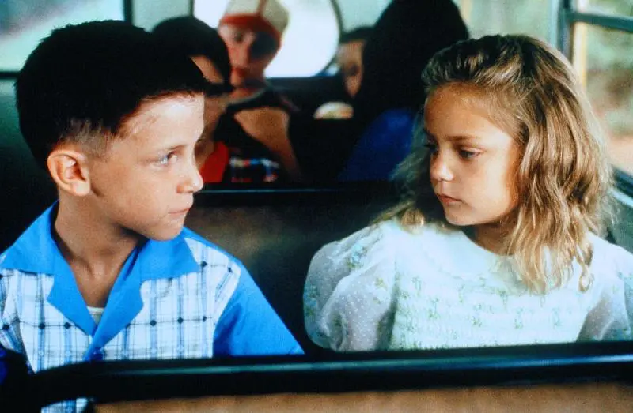
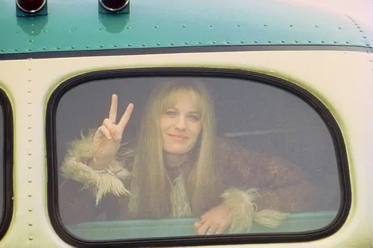
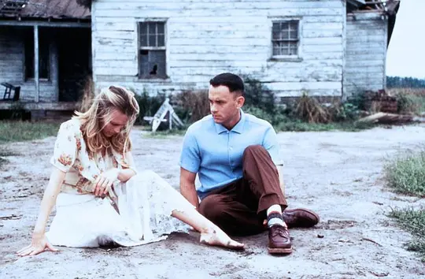

珍妮人物分析

珍妮的第一次出场，是在甘走上校车，面对着一张张拒绝，他有些不知所措。就在这时候，那个无异于天籁的声音帮他解了围，"you can sit here"。珍妮出场。

珍妮踏上了列车，决定追求自己的梦想，去当一名歌手
甘作为英雄受到了约翰逊总统的接见.在一次和平集会上,甘又遇见了珍妮,两人匆匆相遇又匆匆分手.在“说到就要做到”这一信条的指引下,甘最终闯出了一片属于自己的...

珍妮和阿甘回到珍妮小时候居住的地方，珍妮愤怒地向自己曾居住的房子投石块，大叫你怎么能这么做。
返回上一页